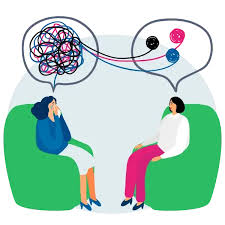

¿Que es la ayuda psicologica?
ayuda psicologica, aquella ayuda que ultimamente todos necesitamos, en especial los adolescentes. La psicología es la ciencia que estudia la conducta humana y los procesos mentales, por lo cual En resumen, la ayuda psicologica es aquella ayuda que se brinda interactuando con otra persona que es la necesitada, haciendo que la otra persona se sienta escuchada, entendida y apoyada por alguien mas, ya sea mediante dialogo, estando con la persona acompañandola, haciendola sentir sumamente escuchada, aconsejandola, haciendola sentir que no esta sola, no minimizando lo que siente, etc.
¿Cual es la importancia de la ayuda psicologica? y ¿Por que?
La ayuda psicologica es fundamental por millones de razones, ya que proporciona un espacio seguro donde las personas pueden explorar, conocerse a si mismas, conocer por que motivo estan teniendo diversas emociones y sobre todo el como manejarlas, sentirse escuchadas, por lo que esto puede conducir a un significativo bienestar para la persona que lo toma. Incluso tambien puede ayudar bastante en los momentos de crisis y un gran ejemplo puede ser algun gran ataque de ansiedad, que esto es algo muy comun hoy en dia entre los adolescentes. Tambien ayuda mucho en el crecimiento personal, a superarse a si mismo y poder crecer como persona, sinceramente la ayuda psicologica es de suma ayuda e importancia para cualquier persona.
Que es la Salud Mental?
La Salud Mental se refiere al balance que tiene una persona en su vida, ya sea con sus emociones, pensamientos, conductas, habitos, el estres, y sobre todo el como una persona maneja su vida y lo que esta sintiendo. Algunos factores que influyen mucho en la salud mental de alguien pueden ser el entorno social, el entorno academico, la resilineica, el como esta persona trabaja con si misma, como contribuye a su comunidad y las capacidades que una persona tiene. Pero, sobre todo lo que mas influye en la salud mental de una persona es lo academico y el entorno social que rodea. ¿Sabias que los trastornos mentales relacionados a emociones, son la consecuencia de guardar tantas cosas por tanto tiempo?
¿Por que es importante tocar el tema de la Salud Mental?
Por que la salud mental afecta la manera en la que pensamos, sentimos y actuamos cuando enfrentamos la vida y nuestros problemas dia a dia. También ayuda a determinar cómo manejamos el estrés, nos relacionamos con los demás y tomamos decisiones. La salud mental es importante en todas las etapas de la vida, desde la niñez y la adolescencia hasta la adultez y la vejez. Ademas que es un importante primer paso para romper con los estereotipos y falsas creencias, superando así los prejuicios y los malos tratos hacia las personas con enfermedad mental. Entre la sociedad este tema aun no esta muy bien considerado, ya que aun es usado como una "burla" y es muy minimizado, sobre todo para quienes lo viven.
¿Que son los trastornos Mentales?
Los trastornos mentales (o enfermedades mentales) son afecciones que impactan el pensamiento, sentimientos, estado de ánimo y comportamiento. Pueden ocurrir en un corto período de tiempo o aparecer y desaparecer. Algunos pueden ser crónicos (de larga duración). Pueden afectar la capacidad de relacionarse con los demás, Puede tambien afectar el modo de hacer las cosas, por ejemplo la motivacion para hacer algo. Hay diferentes tipos de trastornos, pero los mas conocidos y comunes de hoy en dia son el trastorno de Ansiedad y el Trastorno de depresion.
Tipos de trastornos mas comunes en el mundo
- Trastorno de Depresion
- Trastorno de Afectivo Bipolar
- Trastorno de Ansiedad
- Esquizofrenia
- Trastornos Alimenticios
- Anorexia
- Bulimia
- Trastorno por atracon
- Fobias
- TDAH
- Trastorno limite de la personalidad
- Demencia
- TOC
- Trastorno por consumo de sustancias
¿Cual es la causa de los trastornos?
Esto es algo que puede variar mucho, ya sea por el tipo de trastorno, por ejemplo, La causa exacta de los trastornos alimenticios no se saben con certividad, pero las investigaciones hechas por expertos dicen que es una combinación de factores genéticos, biológicos, conductuales, psicológicos y sociales es lo que puede aumentar el riesgo de tener este tipo de trastorno. La causa de los trastornos de personalidad va de la mano con lo que la persona haya vivio en su pasado, ya sean traumas, o tambien influye mucho la genetica pero comunmente este tipo de trastornos son generados por los traumas o vivencias anteriores, pero aun no se sabe con 100% de asertividad cual es la causa de todos los tipos de trastornos.
¿Como son tratados los Trastornos?
Los tratamientos para los problemas de salud mental incluyen psicoterapia y medicación. Un tipo de psicoterapia común es la terapia cognitivo-conductual (CBT, por sus siglas en inglés). Existen medicamentos para tratar diversos condiciones mentales. Las personas no responden de la misma manera a los medicamentos, aparte, que los medicamentos psiquiatricos hacen efecto con lentitud, sin embargo la mayoria son un alivio para quienes viven Trastornos, ya que disminuye y trata el como se siente la persona.
 A continuacion, tocaremos el tema de Como trabajar con la salud mental propia..
A continuacion, tocaremos el tema de Como trabajar con la salud mental propia..
¿Por que debo cuidar mi Salud Mental?
Cuidar de nuestra Salud Mental es algo realmente alivianador para nosotros mismos, aparte de que es una muestra de Autoamor, Te estas protegiendo de algun daño mental y en verdad esto es algo muy bueno. Cuidar de nuestra Salud Mental puede llegar a ser algo Que impacte en nuestra vida para bien, aparte, nos ayuda a relacionarnos de mejor manera con los de nuestro al rededor, mejora mucho nuestro autoconcepto y tambien es algo que deja mucha paz y tranquildad al saber que estas cuidando de ti mismo, de verdad es 100% recomendable. por si gustas conocer como cuidar de tu Salud Mental, aqui abajo te dejo unos tips muy buenos.
- No permitas que tus pensamientos evadan tu mente
- Realiza ejercicio regularmente, esto libera mucho estres
- Duerme regularmente, el sueño es alivianador
- Medita, esto es muy tranquilizador
- Escribe como te sientes
- Manten tu mente en positivo, todo tiene algo bueno
- Date un tiempo para ti mism@
- Llora si es necesario, llorar no es de debiles
- Come tus 3 comidas al dia, y no esta mal darse un snack sano
- No olvides cuidar de ti
- Sientete otgullos@ de tus logros, nadie lo hace como tu
- Mejora aquello de ti que no te gusta
- Trabaja en ti, no te centres en los demas
- Manten en tu vida solo personas que aportan para bien
- Habla de como te sientes pero solo con personas de confianza
- No olvides amarte a ti mism@ como a nadie
- Se tu prioridad, nadie te cuidara como tu
Apoyar a alguien mas
Apoyar a alguien mas o ser el hombro de alguien cuando lo necesita, no esta de mas ni nunca lo ha estado, recuerda que siempre hay alguien que va a necesitar de ti, sin embargo, no permitas que eso afecte tu paz mental pero si intenta darte un tiempo para esa persona que necesita tu ayuda.
Consejos para apoyar a alguien emocionalmente
- Escucha a la otra persona activamente.
- Valida sus sentimientos.
- Ofrece tu apoyo incondicional.
- Evita juzgar o criticar.
- Hazle preguntas abiertas.
- Ofecele aliento y afirmacion.
- Se paciente con la persona.
- Compartele experiencias similares.
- Hazle ver y Celebra los pequeños logros.
- Proporcionale recursos
- proporcionale esperanza.
- Cuida de esa persona, pero no olvides cuidar de ti mismo.
- Animalo a buscar ayuda profesional, recuerda que no hay mejor ayuda que de una persona que conoce del tema.